护士站操作手册
一、用户登录和退出
登录说明：
（1）用户代码即是员工代码，例如马主任的用户代码是：xj05；
（2）登陆口令即对应用户的密码，默认密码是：0000；
（3）护士正确输入用户代码和登陆口令后可单击登陆按钮或按回车键登陆；
退出说明：
用户只需关闭浏览器或选项卡即可安全退出系统
二、门诊工作
1、注射/输液
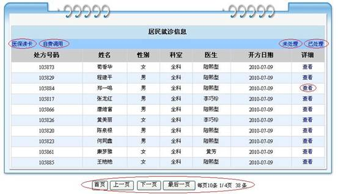
（1）医保读卡：如果病人是医保病人，那么可以直接插医保卡，然后点击医保
读卡链接找到该病人的处方信息，对其经行相关的操作。
（2）自费调用：对于没有医保卡的自费病人，通过点击此链接显示所有自费病
人，护士可依据其姓名进行匹配，实施相关操作。
（3）未处理：显示所有已开处方但未被处理完成的病人。
（4）已处理：显示所有处方单已被处理过的病人。
（5）查看：点击查看该病人的处罚明细信息。
（6）列表翻页：所列是最近3天待处理病人，用户可以翻页来查找病人。
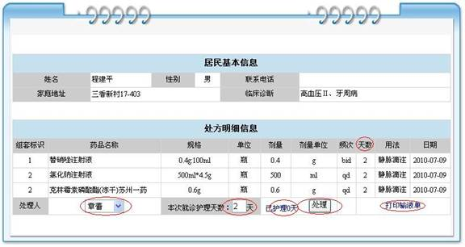
（1）处理人：即该次输液的操作人员。
（2）本次就诊护理天数：指的是本次就诊总计需要护理的天数。依据医生开具
的处方中最大一个天数。
（3）已护理：病人已经被护理的次数。
（4）处理：次按钮点击表示由选定处理人护理一次，并且一天只能处理一次。
（5）打印输液单：点击此链接显示需要打印的输液单，如下图，点击打印，
选择打印机，确定就可以打印了。
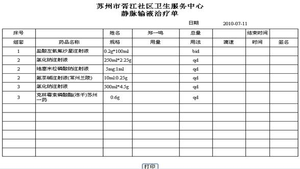
2、门诊观察记录
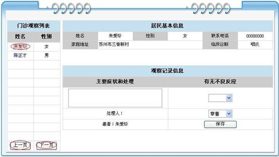
作为护士，此项为每次输液等事项处理完以后的处理结果，就像是做完了一
次护理以后的一次签名。
（1）用户可以点击病人的姓名，此时右侧会显示病人的基本信息，护士可以选
择有无什么不良反应，然后选择处理人，点击保存后作为一次观察记录。
（2）病人的选择可以通过上一页和下一页来选取。
3、T/P/R/BP测量
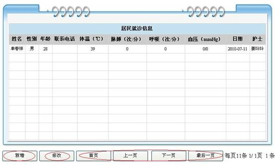
（1）新增：新增一个体温，脉搏，呼吸，血压的测量。
（2）修改：用户可以选中某一行，点击修改可以对相应的值进行修改。
（3）翻页：用户可以通过首页，上一页，下一页，最后一页来翻页选择病人。
（4）同时用户也可以通过“双击”某一行对相关值进行修改。
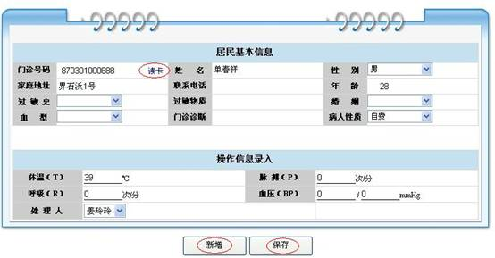
（1）必填项：病人性质，姓名，性别，年龄为必填项，而体温，脉搏，呼吸，
血压中也必须填一项。
（2）读卡：点击读卡，对于已经建档的病人，会自动调出病人的基本信息。
（3）新增：新增会保存当前病人的信息，并且清空所有内容，继续下一个病人。
（4）保存：点击后保存当前病人的信息，然后返回列表。
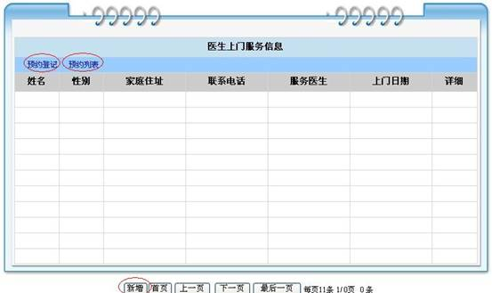
该列表为完成上门服务巡诊后的结果列表，可以通过双击来修改工作记录。
（1）新增：对于未经预约的零时上门服务巡诊，可通过新增按钮记录此次出诊。
（2）预约登记：其中包括了病人的一些基本信息，主要是登记一个预约时间。
另外我们会在系统的最上端，提示当天的预约人数，以及滚动显示相应病
人的姓名性别。
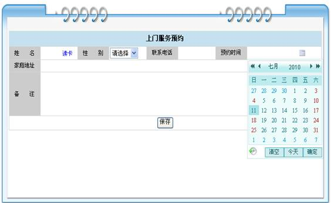
（3）预约列表：显示今天及之后的预约时间和病人基本信息。护士也可以查询
某一天的预约结果。
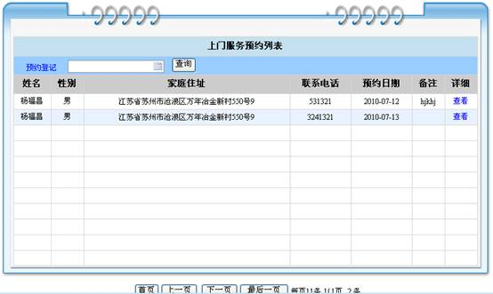
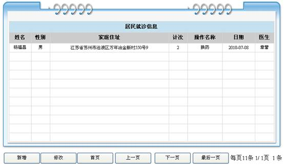
此模块为对于护士伤口处理以及换药的工作量的记录。
（1）新增：新增一个伤口处理或换药的工作记录。
（2）修改：修改某次伤口处理或换药的工作记录。
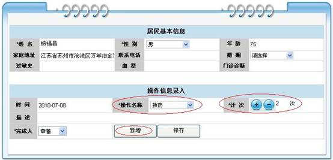
（3）计次：该操作的次数，如果同一个病人同一个操作可以不用新增，只需增
加计次即可。
（4）新增：保存当前记录，然后清空，开始记录下一条记录。
该模块伤口处理/换药模块基本类似，只有操作名称不同。
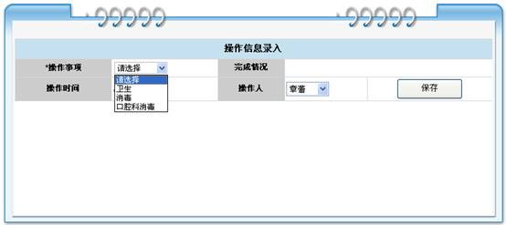
次模块为对于卫生消毒等事项的一个简单记录，便于今后统计工作量。
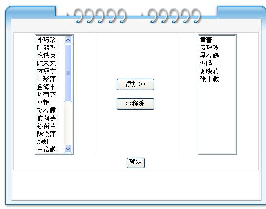
一个简单的用户管理，主要用来把那些人划分为护士，之后就可以依据员工代码
和默认密码（0000）进行登录操作护士站了。
（1） 添加：将左边人员赋予护士的权限，可登录护士站经行相关操作。
（2） 移除：将右边护士移除，使之无护士工作站的权限。
（3） 确定：当主任或管理员，对人员经行完了添加和移除操作，必须点确定以
保存数据。